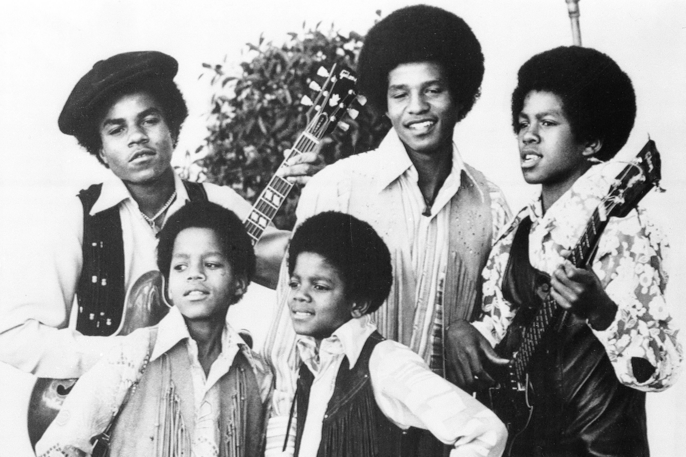
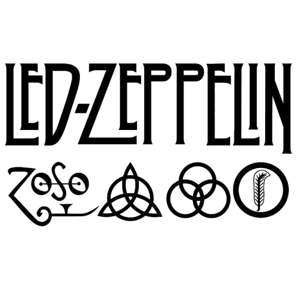
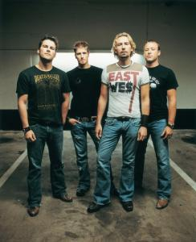
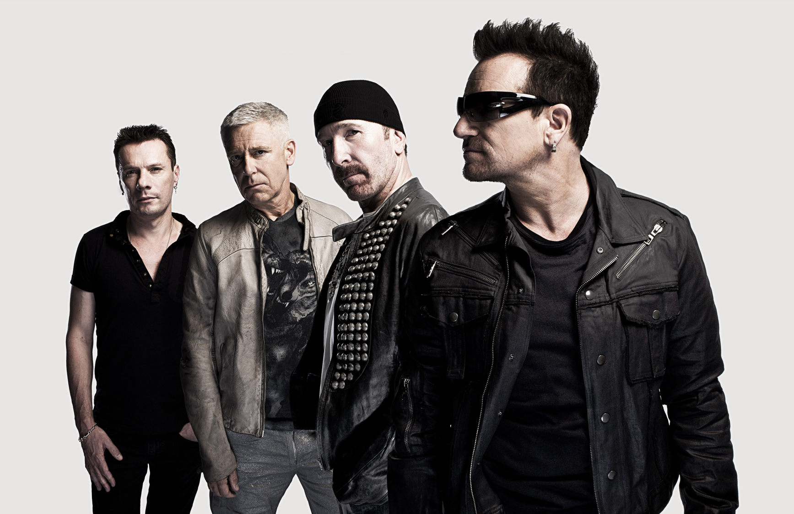
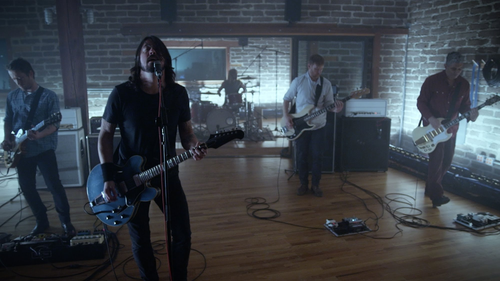

Led Zeppelin är ett av rockhistoriens mest legendariska och inflytelserika band. De bildades i London 1968 av gitarristen Jimmy Page, sångaren Robert Plant, basisten och keyboardisten John Paul Jones samt trummisen John Bonham. Med sin unika blandning av blues, hårdrock och psykedelisk rock skapade de ett sound som kom att definiera den moderna hårdrocken och inspirera otaliga musiker världen över. Redan från debutalbumet Led Zeppelin (1969) visade bandet sin styrka med låtar som Good Times Bad Times och Dazed and Confused. Samma år släppte de uppföljaren Led Zeppelin II, där den ikoniska Whole Lotta Love cementerade deras plats i rockens finrum. De fortsatte att utveckla sitt sound med Led Zeppelin III (1970), där folkmusik och akustiska inslag fick större utrymme, och året därpå kom Led Zeppelin IV, ett av rockens mest klassiska album. Det innehöll bland annat Stairway to Heaven, en låt som med sitt episka arrangemang och suggestiva texter blev en av de mest berömda i musikhistorien. Bandets musik kännetecknades av Jimmy Pages innovativa gitarrspel, Robert Plants kraftfulla sångröst, John Bonhams explosiva trumspel och John Paul Jones mångsidiga musikerskap. De var också kända för sina spektakulära liveshower, där låtar ofta utvecklades genom improvisation. Under 1970-talet fortsatte de sin dominans med album som Houses of the Holy (1973) och det mästerliga dubbelalbumet Physical Graffiti (1975).



